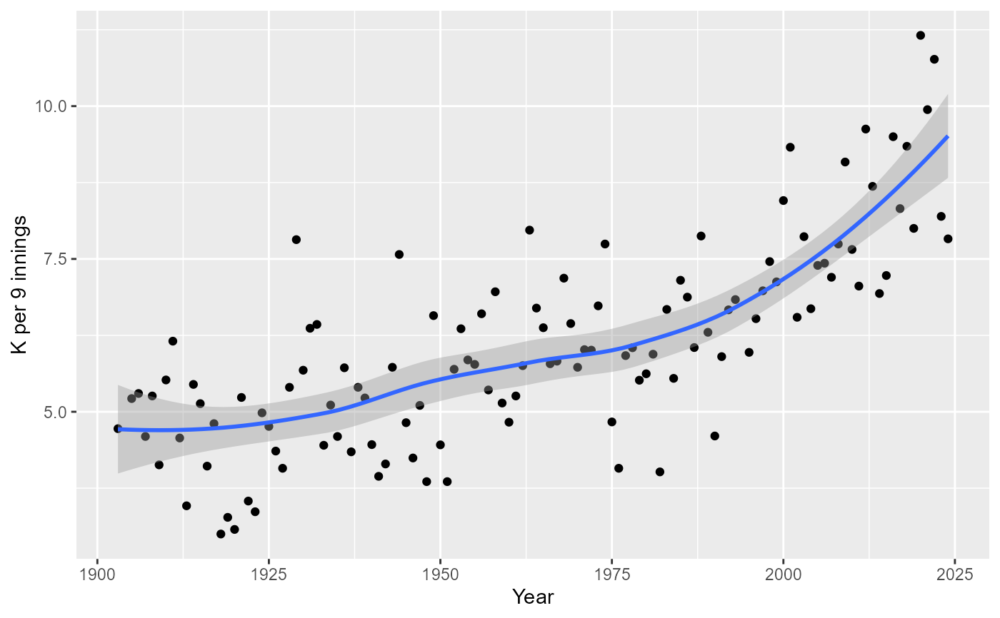

PitchingPost table
PitchingPost.RdPost season pitching statistics
Usage
data(PitchingPost)Format
A data frame with 6757 observations on the following 30 variables.
playerIDPlayer ID code
yearIDYear
roundLevel of playoffs
teamIDTeam; a factor
lgIDLeague; a factor with levels
AAALNLWWins
LLosses
GGames
GSGames Started
CGComplete Games
SHOShutouts
SVSaves
IPoutsOuts Pitched (innings pitched x 3)
HHits
EREarned Runs
HRHomeruns
BBWalks
SOStrikeouts
BAOppOpponents' batting average
ERAEarned Run Average
IBBIntentional Walks
WPWild Pitches
HBPBatters Hit By Pitch
BKBalks
BFPBatters faced by Pitcher
GFGames Finished
RRuns Allowed
SHSacrifice Hits allowed
SFSacrifice Flies allowed
GIDPGrounded into Double Plays
Source
Lahman, S. (2024) Lahman's Baseball Database, 1871-2023, 2024 version, http://www.seanlahman.com/
Examples
library("dplyr")
library(ggplot2)
# Restrict data to World Series in modern era
ws <- PitchingPost %>%
filter(yearID >= 1903 & round == "WS")
# Pitchers with ERA 0.00 in WS play (> 10 IP)
ws %>%
filter(IPouts > 30 & ERA == 0.00) %>%
arrange(desc(IPouts)) %>%
select(playerID, yearID, teamID, lgID, IPouts, W, L, G,
CG, SHO, H, R, SO, BFP)
#> playerID yearID teamID lgID IPouts W L G CG SHO H R SO BFP
#> 1 hoytwa01 1921 NYA AL 81 2 1 3 3 1 18 2 18 106
#> 2 mathech01 1905 NY1 NL 81 3 0 3 3 3 13 0 18 94
#> 3 hubbeca01 1933 NY1 NL 60 2 0 2 2 0 13 3 15 80
#> 4 fordwh01 1960 NYA AL 54 2 0 2 2 2 11 0 8 65
#> 5 mcginjo01 1905 NY1 NL 51 1 1 2 1 1 10 3 6 65
#> 6 mailsdu01 1920 CLE AL 47 1 0 2 1 1 6 0 6 58
#> 7 bentoru01 1917 NY1 NL 42 1 1 2 1 1 9 3 8 53
#> 8 fordwh01 1961 NYA AL 42 2 0 2 1 1 6 0 7 49
#> 9 billija01 1972 CIN NL 41 1 0 3 0 0 6 1 11 50
#> 10 dobsojo01 1946 BOS AL 38 1 0 3 1 0 4 3 10 48
#> 11 reynoal01 1949 NYA AL 37 1 0 2 1 1 2 0 14 43
#> 12 labincl01 1956 BRO NL 36 1 0 2 1 1 8 1 7 47
#> 13 brownmo01 1908 CHN NL 33 2 0 2 1 1 6 1 5 40
#> 14 jamesbi02 1914 BSN NL 33 2 0 2 1 1 2 0 9 37
#> 15 krameja01 1944 SLA AL 33 1 0 2 1 0 9 2 12 46
#> 16 beardge01 1948 CLE AL 32 1 0 2 1 1 6 0 4 36
#> 17 larsedo01 1956 NYA AL 32 1 0 2 1 1 1 4 7 37
# Pitchers with the most IP in a series
# 1903 Series went eight games - for details, see
# https://en.wikipedia.org/wiki/1903_World_Series
ws %>%
arrange(desc(IPouts)) %>%
select(playerID, yearID, teamID, lgID, IPouts, W, L, G,
CG, SHO, H, SO, BFP, ERA) %>%
head(., 10)
#> playerID yearID teamID lgID IPouts W L G CG SHO H SO BFP ERA
#> 1 phillde01 1903 PIT NL 132 3 2 5 5 0 38 22 178 3.07
#> 2 dinnebi01 1903 BOS AL 105 3 1 4 4 2 29 28 134 2.06
#> 3 youngcy01 1903 BOS AL 102 2 1 4 3 0 31 17 142 1.85
#> 4 mullige01 1909 DET AL 96 2 1 4 3 1 23 20 132 2.25
#> 5 mathech01 1912 NY1 NL 86 0 2 3 3 0 23 10 115 0.94
#> 6 spahnwa01 1958 ML1 NL 86 2 1 3 2 1 19 18 113 2.20
#> 7 adamsba01 1909 PIT NL 81 3 0 3 3 1 18 11 106 1.33
#> 8 burdele01 1957 ML1 NL 81 3 0 3 3 2 21 13 104 0.67
#> 9 coombja01 1910 PHA AL 81 3 0 3 3 0 24 17 116 3.33
#> 10 covelst01 1920 CLE AL 81 3 0 3 3 1 15 8 97 0.67
# Pitchers with highest strikeout rate in WS
# (minimum 20 IP)
ws %>%
filter(IPouts >= 60) %>%
mutate(K_rate = 27 * SO/IPouts) %>%
arrange(desc(K_rate)) %>%
select(playerID, yearID, teamID, lgID, IPouts,
H, SO, K_rate) %>%
head(., 10)
#> playerID yearID teamID lgID IPouts H SO K_rate
#> 1 gibsobo01 1968 SLN NL 81 18 35 11.666667
#> 2 schilcu01 2001 ARI NL 64 12 26 10.968750
#> 3 koufasa01 1965 LAN NL 72 13 29 10.875000
#> 4 gibsobo01 1964 SLN NL 81 23 31 10.333333
#> 5 newhoha01 1945 DET AL 62 25 22 9.580645
#> 6 gibsobo01 1967 SLN NL 81 14 26 8.666667
#> 7 woodjo02 1912 BOS AL 66 27 21 8.590909
#> 8 reynoal01 1952 NYA AL 61 12 18 7.967213
#> 9 alexape01 1926 SLN NL 61 12 17 7.524590
#> 10 earnsge01 1931 PHA AL 72 12 20 7.500000
# Pitchers with the most IP in WS history
ws %>%
group_by(playerID) %>%
summarise_at(vars(IPouts, H, ER, CG, BB, SO, W, L),
sum, na.rm = TRUE) %>%
mutate(ERA = round(27 * ER/IPouts, 2),
Kper9 = round(27 * SO/IPouts, 3),
WHIP = round(3 * (H + BB)/IPouts, 3)) %>%
arrange(desc(IPouts)) %>%
select(-H, -ER) %>%
head(., 10)
#> # A tibble: 10 × 10
#> playerID IPouts CG BB SO W L ERA Kper9 WHIP
#> <chr> <int> <int> <int> <int> <int> <int> <dbl> <dbl> <dbl>
#> 1 fordwh01 438 7 34 94 10 8 2.71 5.80 1.14
#> 2 mathech01 305 10 10 48 5 5 0.97 4.25 0.836
#> 3 ruffire01 257 8 27 61 7 2 2.63 6.41 1.18
#> 4 bendech01 255 9 21 59 6 4 2.44 6.25 1.01
#> 5 hoytwa01 251 6 22 49 6 4 1.83 5.27 1.23
#> 6 gibsobo01 243 8 17 92 7 2 1.89 10.2 0.889
#> 7 nehfar01 237 6 32 28 4 4 2.16 3.19 1.04
#> 8 pettian01 233 0 26 56 5 4 4.06 6.49 1.40
#> 9 reynoal01 232 5 32 62 7 2 2.79 7.22 1.20
#> 10 palmeji01 194 1 31 44 4 2 3.2 6.12 1.33
# Plot of K/9 by year
ws %>%
group_by(yearID) %>%
summarise(Kper9 = 27 * sum(SO)/sum(IPouts)) %>%
ggplot(., aes(x = yearID, y = Kper9)) +
geom_point() +
geom_smooth() +
labs(x = "Year", y = "K per 9 innings")
#> `geom_smooth()` using method = 'loess' and formula = 'y ~ x'
